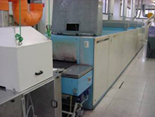
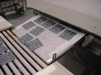
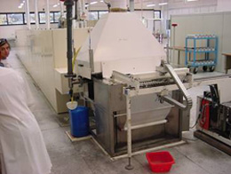
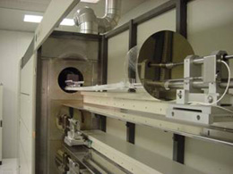
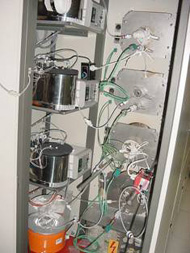
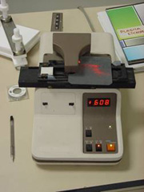

Level 1 - Phosphorus Diffusion
Virtually all manufactured crystalline silicon solar cells use p-type substrates, therefore necessitating the formation of an n-type emitter to create the p-n junction for collecting the charge generated by the photons of light. Virtually all n-type layers are produced via a phosphorus diffusion at high temperature. These diffusions essentially have two steps to the process, the first involving the deposition of a phosphorus containing film or dielectric onto the surface of the wafer, and the second involving a high temperature treatment that allows the phosphorus from this layer to diffuse into the surface of the p-type wafer.
Approach 1
|  | One approach to depositing the phosphorus containing layer is to use a spin-on diffusion source that contains phosphorus. These diffusion sources are available in silicon dioxide based liquids or polymer based liquids but in general achieve similar results provided similar levels of purity and provided both are appropriately dried before being raised to high temperatures in the range of 900-1000°C. These sources are applied by spin-coaters with the liquid source being applied to the centre of the wafer prior to the wafer being spun at a speed and for a duration determined by the parameters set for the spin coater. These are similar to the systems used in the microelectronics industry for applying photoresist to wafers prior to mask aligning. |
The faster the spin speed, the thinner the layer produced. Too fast an acceleration, however, can lead to the liquid being prematurely thrown off the wafer before having a chance to properly coat the entire surface, particularly when it is textured. This is a wasteful process with often more material being spun off the wafer than remains coating the surface.
These diffusion sources can also be obtained with different concentrations of phosphorus that therefore achieve different dopant profiles. The highest concentration sources act like infinite sources of phosphorus that ensure the phosphorus concentration at the surface of the wafer is always determined by the solid solubility of the phosphorus in the silicon at the particular diffusion temperature used. For diluted or more lightly doped sources, the rate of phosphorus diffusing into the surface of the silicon becomes limited by the availability of the phosphorus in the deposited layer, therefore restricting the phosphorus concentration at the surface of the wafer to below the solid solubility for the phosphorus in the silicon. Thickness of the deposited layer can also become of significance for the more lightly doped sources as it is possible to fully deplete the very thin layers.
The drying process is fairly straight forward for these diffusion sources, although it is essential that they be properly dried before passing into the high temperature furnace zones. Layers not properly dried will tend to crack and lose their intimate contact with the surface of the silicon wafer, at least in some regions where the spin-on source is thickest and therefore least well dried. It then becomes near impossible to diffuse phosphorus effectively into these regions of the silicon. Many spin-on sources will actually take on a “whitish“ appearance when this occurs with a particular problem being the bases of pyramids where the layers tend to be thickest.
Some spin-on
diffusion sources, particularly those that are polymer based, can be damaged
by high intensity light from infrared lamps. This may necessitate a furnace
design that uses the infrared lamps for the belt furnace to be located only
beneath the belt rather than both above and beneath the belt as is the case
of many furnace designs. Alternatively, the power to the lamps needs to be
limited to prevent the highest light intensities being produced as the lamps
cycle between high and low power under the control of the 3-term electronic
furnace temperature controller. Most of these furnaces have a drying zone typically
2 metres long with a temperature range of typically 0-400°C. The
high temperature zones on the other hand are typically 3-4 metres in length
and include several heating zones that can be set to different temperatures
as required. The belts on these furnaces move relatively slowly, with a period
of 0.5-1.0 hours being the typical range of times for wafers to traverse the
full length of the equipment. |
 |
Approach 2
|  | A second common diffusion source that is particularly low in cost is phosphoric acid. Such an acid can be sprayed onto the wafer surface although in commercial production the most reliable approach has been to use an atomizer to produce a fine mist of phosphoric acid in a chamber through which the silicon wafers pass on a belt. The mist settles or condenses on the exposed silicon surface prior to passing into the drying zone for the belt furnace. The diffusion source in this case is significantly cheaper than the polymer or silicon dioxide based spin-on sources, but with the disadvantage that its application is more critical and challenging to get right. The condensing phosphoric acid forms small droplets on the silicon surface due to surface tension. These droplets need to be the right size and the right density to enable effective diffusion to follow. Droplets too large have similar problems drying to the case of spin-on layers that are too thick, while droplets that are too small or a droplet density that is too low leads to non-uniform and ineffective diffusion across regions of the wafer surface. |
Approach 3
|  | Some
manufacturers choose to use a batch type process whereby typically 300 wafers
will be inserted into a quartz tube furnace. In this furnace type, the wafers
are placed inside a quartz tube that is surrounded by heating elements and has
phosphorus containing gases passing through it. At high temperatures, gases
such as phosphorus oxychloride (POCl3) or phosphorus tribromide (PBr3)
are used to form a layer of phosphorus pentoxide (P2O5)
on the wafer surface. Once this phosphorus glass has formed, the high temperature
exposure produces the same type of effect as the high temperature treatment
in the belt furnace when using the other phosphorus diffusion sources described
above. |
 |
At
the end of the diffusion process, a certain number of wafers are usually measured
using a 4-point probe tester to effectively determine how much phosphorus has
diffused into the silicon surface. The measurements give a direct indication
of the conductivity of the phosphorus diffused layer which in turn is directly
related to the amount of phosphorus diffused into the silicon. It does not
however give much insight into the phosphorus profile or depth of the junction.
The electrical measurement taken of the layer is called its “sheet resistivity“
which for a uniformly doped layer is actually equal to the resistivity of the
layer divided by its thickness. For screen-printed solar cells, sheet resistivities
are normally in the vicinity of 40-50 ohms per square although there are both
advantages and disadvantages of going either above or below this range. These
issues are discussed in Level 2. |
 |
Level 2 - Phosphorus Diffusion
The
emitter diffusion is often regarded as the most critical step in the fabrication
of solar cells, particularly screen printed solar cells where tolerances on
the diffusion parameters can be quite tight. For example, a heavier than desired
phosphorus diffusion can lead to significant reduction in short circuit current,
particularly through poor response to short wavelength light. This effect can
be exacerbated if the junction is also driven more deeply than intended. On
the other hand, insufficient phosphorus doping can cause high resistive losses
due to the poor lateral conductivity and also cause problems achieving good ohmic contact between the silicon and the screen printed
metallization. |
Other effects such as the cleanliness of the diffusion source and furnace, the presence of contaminants on the wafer surface following preceding cleaning steps or even stressing of the silicon wafer during the thermal treatments can all potentially lead to a reduction in the minority carrier lifetimes. In general, the higher temperatures that a wafer is exposed to, the greater the potential for damage to the minority carrier lifetimes through contamination or generation of defects. On the other hand, phosphorus gettering properties are well known although perhaps not well understood. Gettering refers to the immobilising or deactivation of contaminants or defects that would otherwise act as recombination sites. Heavy phosphorus diffusions are therefore usually accompanied by some improvement in the minority carrier lifetimes, particularly for multicrystalline silicon wafers where enhanced diffusion down grain boundaries appears to significantly reduce the recombination in these regions. At least some of these benefits result from the formation of the deep lying junctions that transform the grain boundary regions from being minority carrier sinks into minority carrier collecting regions.
The quality of the emitter diffusion can also be affected by other key processing parameters which include the drying time and temperature for the deposited phosphorus film, the peak temperatures seen by the wafers during the diffusion process and of course the time the wafer is exposed to such temperatures. Rates of heating and cooling the wafers and corresponding thermal gradients across the wafer surfaces are also sometimes thought to be of importance in trying to minimize the stresses and hence dislocation generation taking place in the wafers. Considerable investigative work aimed at evaluating this, however, has indicated that for screen printed devices with open circuit voltages in the vicinity of 600 mV, such stressing is not significant and in fact may actually help to assist gettering processes when dealing with multicrystalline silicon wafers. The remainder of this section will focus primarily on the impact that the emitter diffusion will have on the electrical properties of the solar cell, particularly with regard to the impact on the fill factor, short circuit current and the open circuit voltage of the device.
The emitter diffusion can have a significant impact on the device fill factor primarily through variations in the corresponding series resistance of the device. Generated electrons collected by the junction must travel laterally in the diffused n-type emitter as majority carriers until the metal contact is reached. These electrons therefore sustain resistive losses, the magnitude of which are determined by the lateral conductivity of the emitter (sheet resistivity), the distance that the electrons have to travel to reach the metal, and the number of electrons (the magnitude of the current) flowing. Another way in which the emitter diffusion can affect the series resistance of the device is via its impact on the ability of the front metal contact to form an ohmic contact to the n-type silicon. Screen printed (and other) metal contacts in general require very heavy doping to avoid the formation of Schottky barriers and other unwanted resistive effects. The depth of the junction can also be quite important as the metal must always be sintered at high temperatures to ensure good contact is made both from a mechanical and electrical perspective. If the junction is not sufficiently deep, the metal can approach or even reach the junction with corresponding deleterious effects on the series resistance and potentially even the junction recombination that will cause the ideality factor (n) to rise, therefore further reducing the fill factor. These effects will be discussed in more detail in conjunction with the metal contact formation processes.
The impact of the emitter diffusion on current is quite important. Sunlight comprises a large number of photons of different energy levels determined by the wavelength of the light. High energy photons (short wavelength light at the blue end of the spectrum) will be absorbed within the silicon material very rapidly and in close proximity to the light receiving surface. Longer wavelengths of light (e.g., red light) will penetrate further into the silicon, typically several microns, which in general will take most of these photons beyond the junction location. Infrared light (wavelengths corresponding to photon energy levels approaching the bandgap energy for silicon of 1.12 eV) will tend to penetrate hundreds of microns into the substrate with significant amounts actually reaching the rear surface of the device. Virtually all of the photons of light that are absorbed within the silicon generate electron hole pairs that can potentially contribute to the short circuit current of the solar cell. A key parameter is the minority carrier lifetime of the charge generated through this process, as this will determine whether the charge can survive long enough to be able to diffuse to the junction to be collected and therefore contribute to the device short circuit current.
When considering the impact of the emitter diffusion, we therefore need only consider the wavelengths of light that will have significant amounts absorbed within the emitter. In particular, the shortest wavelengths of light (ultraviolet light and blue light) will be absorbed (and therefore generate electron-hole pairs) in very close proximity to the wafer surface. Unfortunately, most of this charge is often unable to be collected by the junction because either the emitter is diffused too heavily which drastically reduces the minority carrier lifetimes or else the junction is too deep so that the generated charge (in this case the holes) is unable to diffuse as a minority carrier to the junction. Charge that does not have a sufficiently long minority carrier lifetime will simply recombine in the silicon, giving up the energy that was absorbed from the light, in the form of heat. A compromise results because the emitter needs to be reasonably heavily doped with phosphorus to ensure adequate lateral conductivity to keep the resistive losses at respectable values. In general, once the sheet resistivity of a device falls below 100 ohms/square, there are inevitably regions at the surface of the device that are “dead“ from the perspective that significant amounts of the charge generated in such regions cannot be collected by the junction. For screen printed solar cells, the sheet resistivities are normally well below this value, typically in the range of 40-50 ohms/square. At these values, a significant dead layer exists at the surface that not only prevents the collection of charge generated by the ultraviolet light, but even leads to significant losses from the charge generated by the highest intensity wavelengths of light in the solar spectrum, namely the green light. This light will be absorbed mostly within the first 1-2 microns of the silicon, with typically 10% of this being absorbed within the dead regions near the surface where the collection of the charge is poor.
The nett result is that the heavy phosphorus diffusions needed for screen printed solar cells cause a dead layer at the surface that leads to poor response to the short wavelengths of light (blue light). Even at the peak of the solar spectrum, there is typically a 10% loss in the amount of charge collected and able to contribute to the device current (green light). The longer wavelengths of light in the infrared region are relatively unaffected by the emitter profile and sheet resistivity. Most of this light is absorbed within the bulk of the device, with the corresponding collection probability for the generated charge being determined more by the minority carrier lifetimes for the wafer material and also the rear surface conditions.
It is important to note that even if the sheet resistivity of the emitter was raised to above 100 ohms/square to minimize recombination within the emitter, it is still necessary to passivate the surface. Otherwise the surface will still effectively create a dead layer as it provides large numbers of recombination sites for the charge generated in close proximity. Where the surface quality is poor with a large density of recombination sites, we call this a high surface recombination velocity. Most screen printed solar cells have a high surface recombination velocity. This in itself however does not harm the performance as the charge generated near the surface would not have been able to be collected by the junction in any case due to the heavy emitter doping. For high efficiency devices it is therefore necessary to not only have a lightly diffused emitter (with sheet resistivity above 100 ohms/square) but also a well passivated surface (which we call a low surface recombination velocity).
The open circuit voltage of the device is also related to the recombination throughout the device. This is because the open circuit voltage corresponds to the terminal voltage across the device when the total photogenerated current exactly equals the total recombination current (i.e. total generation equals total recombination). Reducing the recombination in the device will allow a higher terminal voltage to be therefore achieved when satisfying the condition of total generation equaling total recombination. This recombination current is directly related to the dark saturation current of the device which is in turn dependent upon various factors such as the doping concentrations in the emitter and base, the corresponding minority carrier lifetimes in the emitter and base, and also the surface recombination velocities. It should be noted that the surface recombination velocities only have an effect if the charge recombining at the location could have otherwise been collected by the junction. In the same way that light generated charge in dead regions of the device cannot contribute to the short circuit current, neither do these regions contribute to the recombination current under open circuit voltage conditions. Consequently, these inactive regions of the device also do not contribute to the dark saturation current.
The relevance of this to screen printed solar cells is the fact that with a heavy phosphorus diffusion, the very heavily diffused dead regions near the surface do not actually hurt the voltages of the cell because they are inactive. Similarly, high recombination velocity light receiving surfaces do not hurt the screen printed solar cell voltages for the same reason, because this region of the device is effectively dead due to its isolation from the active parts of the device by the heavy phosphorus diffusion. In general, screen printed solar cells will instead have their voltages limited more by the quality of the substrate or the rear surface recombination velocity which is also often very high leading to large amounts of recombination.